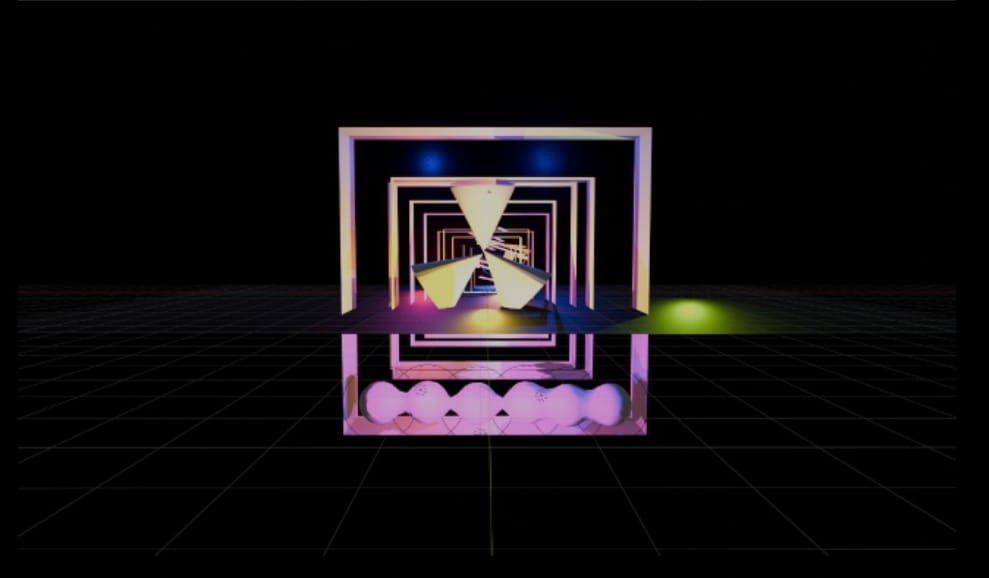
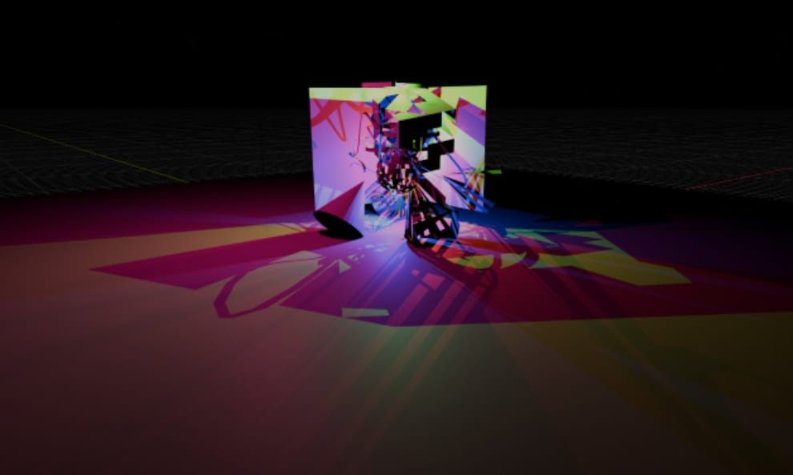
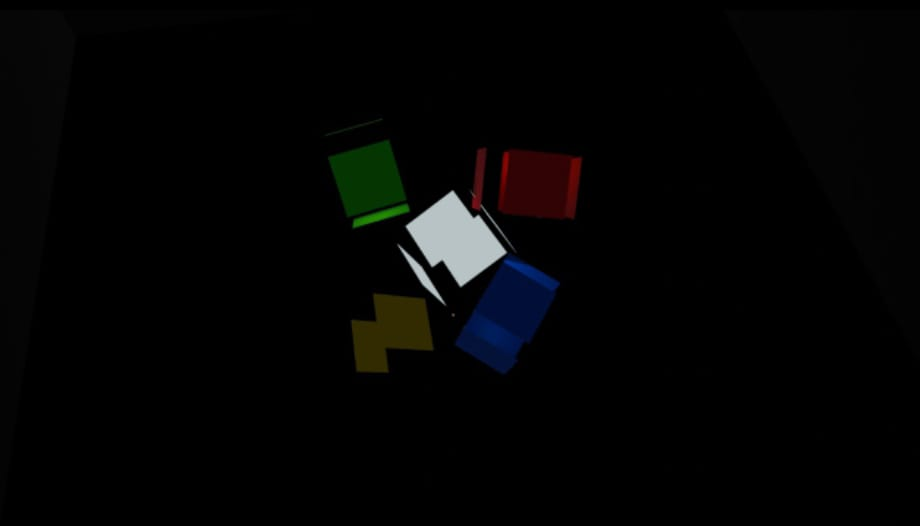

Espacios
Espacios es un proyecto del 2do trimestre donde a través de imágenes fijas busco transportar al espectador al interior de distintos escenarios, acompañados de una musicalización sonora que complementa y da vida a cada ambiente. Cada imagen construye una habitación propia donde la vista y el sonido se fusionan para crear una experiencia inmersiva única.





